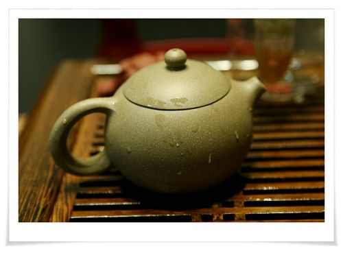
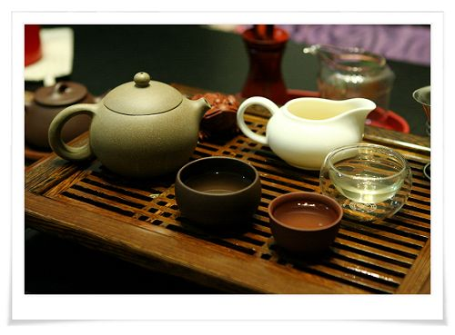

信誓旦旦要在十点半前睡觉，大概只有两三个晚上如此，其余时候基本还是午夜才睡。前些天看到一篇有关“晨型人”的文章，早上六七点起床只能算起得早，5点起床，才算晨型人。这些人大约晚上9点就睡觉了，对于我这样有时9点才下班的人来讲极不现实。加班俨然成为一种常态，还有午夜12点才下班的主儿，据说遇到院子里放养的两只大狼狗，它们白天睡觉，午夜之后散放在大院里看门。那时候下班的人得打电话到门卫招呼一声，或者直接叫出租到院子里来接。这位遇到大狼狗的同事，既没叫出租也没开车，更没打招呼，路遇大狼狗只好翻墙逃窜。想象这情形既有趣又无奈。
回到晨型人话题上，他们在特定网站上交流心得，起床后上网签到，相互监督鼓励。这种行为的连贯性必须建立在有效并合理安排时间上，原先3小时完成的事情，如何缩短到1小时内完成。当时间管理发挥到极致，渐渐改变做事拖沓，生活质量下降，没时间吃早餐等状况。并且让一整天神清气爽。
作为一个晨型人存在会是怎样的感受？早晨5点起床，8点40离开家，想象这之间的3个多小时可以做许多事儿。跑步锻炼，买菜做早饭，遛狗，洗澡换衣服化妆，还能把午饭需要的菜清理好。。。如此诱惑力弓虽大。。。但，仍然无法跨越客观状况，除非每天8小时后可以毫无牵挂的下班。有一天脖子和肩膀让人忍无可忍了，下班直奔手佳，按摩后的第二天感觉自己瘫痪了似的，下午才爬起来去上班。“晨型人”以及目前工作造成的身体状况提醒我，要挤出时间来锻炼身体，没有健康什么都会离我而去。
下班后在江南公社吃晚饭，服务员们临近下班卖力又激动的工作着，碟子碗乒乒乓乓得响，真跟坐在大食堂里用餐似的。回家泡壶茶喝，晚上泡的金叶子茶，可能属于白茶吧？（欢迎纠错）用上另一只紫砂壶。说实话，喝茶也得酝酿心境，慌慌张张喝茶，怠慢了茶叶与茶具哦。
这把壶的原理来自女性乳房，浑圆的造型很适合把握在手，壶的大小用一只手差不多就可以包住的A罩杯。倒出的水柱没有时粗时细，很流畅，我对此研究尚浅，学习积累后方能详解。
听首贾鹏芳的“睡莲”吧，在这寂静的夜。





放一张《联生活周刊》2010年12期封面故事：功夫茶——武夷山、安溪寻找茶香之源“功夫茶”的图，照片中茶人的面孔、表情、发型、肤色与茶、茶具、茶文化融为一体，很和谐。既薄又透的白色茶杯煞是好看。